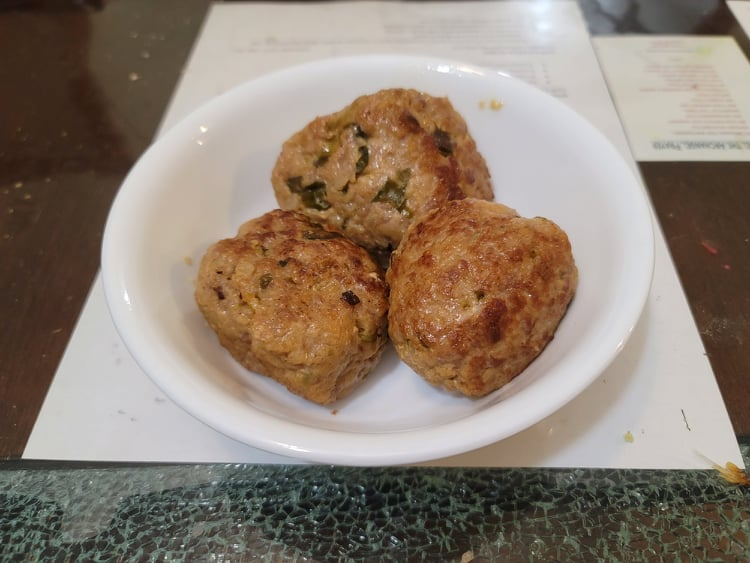

Lion's Head Meatballs

Ingredients:
- 1 lb Ground pork
- 4 tbsp Water
- 4 tbsp Shaoxing Wine
- 3 tbsp Light soy sauce
- 1 tbsp Sugar
- 2 tsp Salt
- 1 tsp Dark soy sauce
- 1 tsp Ginger, grated
- 1/2 cup Scallions, minced, about 3 scallions
- 1 tbsp Cornstarch
- 1 cup Water chestnuts, minced
- 3 eggs
- 1 cup Panko breadcrumbs
- 2 tbsp Sesame oil
- 2 tbsp Canola Oil
Instructions:
- Place the pork into a large bowl with the water. Massage the water into the pork with your hands.
- Add Shaoxing wine, light soy sauce, dark soy sauce, salt, sugar, grated ginger, cornstarch, and scallions. Mix into the pork until homogenous.
- Mix in the water chestnuts and eggs.
- Add in the panko and sesame oil. Massage until homogenous.
- Form the pork into 1/3 cup sized meatballs.Add more panko if it does not hold its shape.
- Heat the canola oil in a large pan over medium heat. In batches of 3-4, fry the meatballs until browned enough on all sides to hold their shape firmly.
- Place the meatballs into the racks of a steamer. Steam over medium heat for 40 minutes. Serve hot.